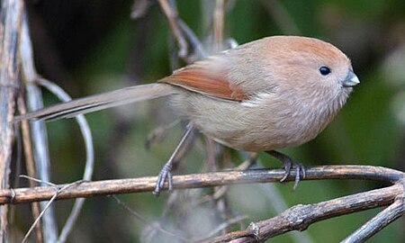

학명은
Paradoxornis webbiana fulvicauda라고 한다.
뱁새라고도 하며, 북한에서는 부비새 또는 비비새라고 부른다.

동부 아시아에 분포하고 있으며 우리 나라에서는 전역에서 흔히 번식하는 텃새이다.
등은 적갈색이고 배는 황갈색이다.
수컷의 등은 핑크색을 띄나 암컷은 연한 색깔이다.
재빠른 동작으로 움직일 때 긴 꼬리를 좌우로 흔든다.
번식기 이외에는 대개 30-50마리의 무리가 쉬지 않고 ‘씨씨씨씨’ 울면서 관목 속을 재빨리 움직이는 것을 볼 수 있다.